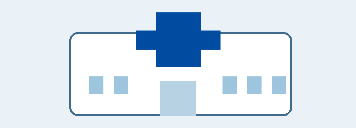

На этой странице представлен учебный перечень отделений поликлиники. Порядок посещения и часы работы можно посмотреть в разделе расписания.
Регистратура объединяет информацию об отделениях и часах приёма. На учебном сайте сведения о подразделениях и расписании размещены на отдельных страницах.

| Параметр | Учебное значение |
|---|---|
| Тип учреждения | Городская поликлиника |
| Площадь | 1200 м2 |
| Этажность | 2 этажа |
| Отделения | Терапия, диагностика, процедуры |